| External CSS | Internal CSS |
| 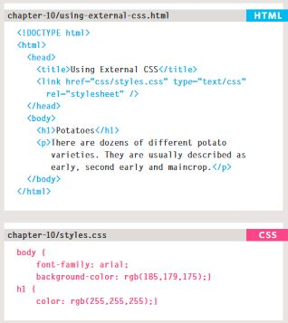 | 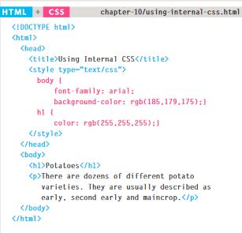 |
The last rule referring to an element takes priority, unless specificity takes over.
| POINT SYSTEM | ||||
| Items | Style Attribute | ID (#) | class="wide"Class, Pseudo-class, Attr | Elements |
| Values | 0 | 0 | 0 | 0 |
NOTE: If the font family/color properties are specified in the <\body> element, they will apply to MOST child
elements. Due to the value of the font-family property is INHERITED by child elements.
The boackground-color or border elements are NOT inherited.
Can be inherited by using the <\div> element
Colors can be assigned in the following ways: RGB, HEX Code, and Color Names
RGB example: rgb(100,100,90)
HEX examples: #363636 #000 #FFFFFF #abc333 etc
Name examples: black darkslategrey red orchid etc
Example code:
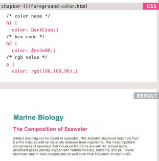
Same color assignments as foreground
Example code:
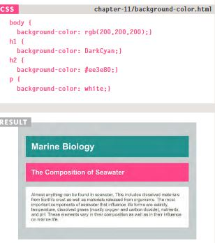
| Harder to read text | Easier to read | For long spans of text |
| Horrible for visually impaired | Ideal for visuall impaired, not good for long text | dk grey txt on white, or off-white on dark |
| Hue | Value is from 0 to 360 (color wheel) |
| Saturation | The amount of gray in a color: 0 - 100% |
| Lightness | 0% (black) to 100% (white), 50% is normal |
| 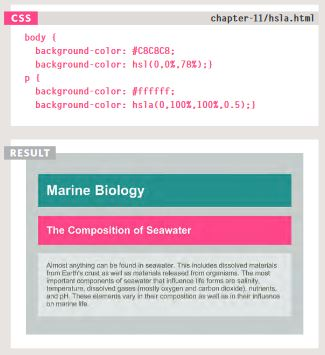 | |
| 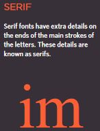 | 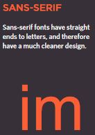 | 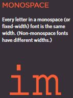 |
| Traditionally used for long passages of text (easier to read) | Better for smaller text due to low resolutions | Commonly used for code since the characters align nicely |
| Technique | Info | Issues | Licensing | Choices | Suitable For: |
| Font-Family | User needs that typface installed | Limited choices of typefaces users have installed | None | Limited choices of typefaces users have installed | Any length of text |
| Font-Face | CSS specifies where font can be downloaded from if not on local computer | User has to download the file, can slow webpage loading | License to use the font must permit its distribution using @font-face | Choices limited, few typefaces can be distributed this way | Any length of text |
| Service-Based-Font-Face | Commercial services give users access to wider range of fonts using @font-face | Ongoing fee to cover licenses | Service takes care of the licensing issues with people who made the font | Each service offers different fonts based on agreements with font foundaries | Any length of text |
| Images | Can create a graphic that contains text (if desire different typeface) | People who use screen readers rely on 'alt text' to know what is said | Can use any typeface that you have license to use on your computer | Wide choice due to being able to use any typeface you have a license for | Not suitable for long passages of text |
| sIFR | Embedded into a flash movie, JavaScript replaces specified HTML text with flash version | User needs flash and JS enabled | May commercial makers allow, may need to pay extra web-use license | Provides choices, many major typeface mfg's allow this | Not suitable for long passages of text |
| CUFON | similar to sIFR, uses JS to create SVG/VML version of text | Requires JS enabled. Users cannot select text, text cannot change when user hovers over it | Some mfg's allow use, but need to check licensing | Slightly less choices than sIFR, some mfg's not offering in CUFON | Not suitable for long passages of text |
Note: If on a Mac, be careful what you use because it may not render correctly on PC. PC, it should look fine on a Mac.
| 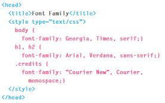 | => | 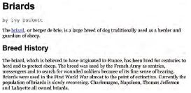 |
| TYPE SIZE | Pixels | Percentages | EMs |
| 12px Scale | h1=24px, h2=18px, h2=14px, body=12px | h1=200%, h2=150%, h2=117%, body=75% | h1=1.5em, h2=1.3em, h2=1.17em, body=100%, p=0.75em |
| 16px Scale | h1=32px, h2=24px, h2=18px, body=16px | h1=200%, h2=150%, h2=133%, body=100% | h1=2em, h2=1.5em, h2=1.125em, body=100%, p=1em |
| Misc Info | - Px is best to ensure font is as desired (% & EMs more likely to vary if user changed
default txt size in browser) - Pixels relative to resolution, less resolution=bigger text - Can also use "pt" for point sizes instead of px. Only do this for style sheets for printer friendly versions of pages |
- Default txt in broswer is 16px. Scaling is based on this 100% value. - If default txt size is changed by user, the site will scale accordingly. |
- Change size of txt based on size of txt in the parent element. Similar rules to
percentages. - The extra "P" rule above is for IE6 and 7 (deprecated), as they used to exaggerate the size of the other text |
Allows the use of a font, even if not installed on client, by allowing the specifying of a path to copy the font, which it then downloads if not available locally.
| 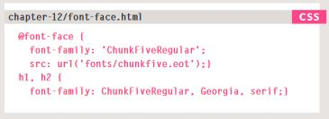 | => | 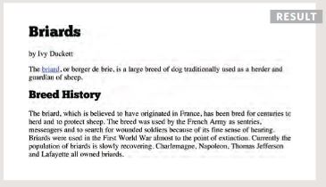 |
Above is a more complicated font-face rule.
NOTE: Different browswers support different formats for fonts (just like they support different audio/video
formats.
| font-weight: (normal, bold); | font-style: (normal, italic, oblique); |
| 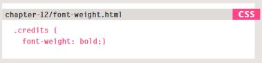 | 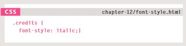 |
| text-transform: (uppercase, lowercase, capitalize); | text-decoration: (none, underline, overline, line-through, blink); |
| 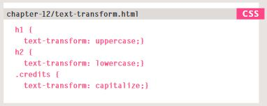 | 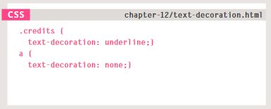 |
| line-height: (#em, #px, #pt, #rem); | text-decoration: (none, underline, overline, line-through, blink); |
| 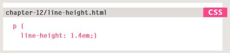 | 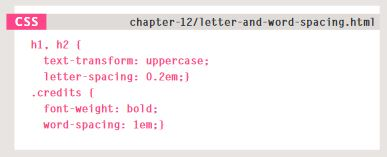 |
| text-align: (left, right, center, justify); Justify: every line in the paragraph, excep the last line, be set to take the full width of the containing box |
vertical-align: (text-top, text-bottom, baseline, sub, super, top, middle, bottom); |
| text-indent: (#px); | text-shadow: (#px #px #px #px #HEXVALUE;) |
| :first-letter, :first-line | :link, :visited |
| 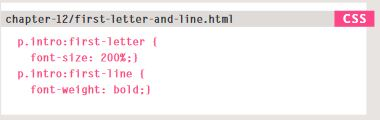 | 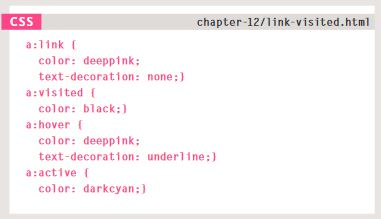 |
Responding to Users |
|
| :hover, :active, :focus Hover is applied when a user hovers over the element, Active is applied when it gets activated by the user, Focus is applied when an element has focus(when a browser discovers you are ready to interact with an element: IE when a cursor is in a form input ready to accept typing) |
|
| 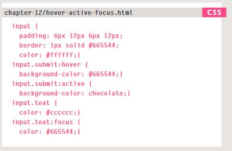 | |
Just use min-width: ##px; AND max-width: ##px; to set your min/max in CSS. EZ-PZ
| This is some cool entry to sell one heck of a jazz saxophone. You know, the kind any pro would want. You don't want it, but pros would. So you'd skip over this item to find something that suits your tastes better. | $8400 | |
| This is a really cheap and beat up saxophone from some highschool student that has since moved to college. He sold this because he was not going to use it for marching band any more. The laquer is all rubbed off and there is corrosion on it. Trust me, you don't want this one. | $900 | |
| Now this is the saxophone you want. It is a great intermediate saxophone that will sound great and last for years to come. It is in mint condition and the seller wants it gone. You won't find a better deal anywhere! | $2500 |
| 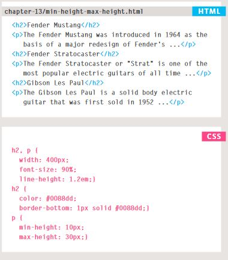 |